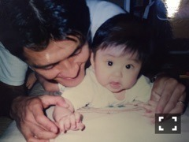

| 2016/06 27 Mon | 私の父。(´>∀<｀)ゝ |
ちはるーむへようこそ\( ˆoˆ )/

さくらんぼってなんでこんなに甘くて
更に見た目も可愛いんだろう。
反則だよ。こやつめ。。
さくらんぼ、ブルーベリー、プラム。
旬な季節がやってきた！
大好きな果物達♪
フルーツが、好きです。
斎藤ちはるです。
-------------------------♡
昨日の乃木坂工事中観てくださった方
ありがとうございました！！\( ˆ ˆ )/
父の日企画、なぜか私の父の電話がつながりました。
突然すぎて声を聞いても気付きませんでした。
ごめんね、ぱぱ。
お父さん、
初めてのテレビデビューだ！(声だけだけども)
と言ってはしゃいでいました。
バナナマンさんとも喋ったんだぞ！
と妹に自慢しておりました。
親戚一同に連絡して、
この日は絶対観るように！
と電話やメールしまくっていました。
なんともまあ、無邪気な父です。
そんな無邪気な父ですが、頼りになります。
口うるさい部分もあるけど(｡-_-｡)笑
いつも私を支えてくれて、励ましてくれて、1番近くで応援してくれている。
私の事を大切にしてくれているんだな〜と実感できます。
そんな父が大好きです！
でも、
ちゅーしてあげる券と
ぎゅーしてあげる券は
使わせてあげないもんね！(｡-_-｡)べー

小さい頃の私と、お父さん！
これからも宜しくね。
-------------------------♡
むにむに。
この写真はオレンジネイルです。
むにむに。
意外と少年漫画好きです。
東京喰種とかアイアムアヒーローとか帝一の國とか。
おすすめありますか？？
もちろん少女漫画も好きです。
ラブ☆コンは傑作だと思います。
むにむに。
ただただ、眠いです。
むにむに。という可愛気のある言葉にあやかって
心の一言を呟いてみました。
いいかも。心の一言。
呟いてみたいかも。心の一言。
呟きたいときに、呟いてみよう。
今日は短めだけど...寝ます( ◦˙ ˙◦ )
おやすみ( ◦˙ ˙◦ )
斎藤ちはる
コメント(281)
2016/06/27 23:48